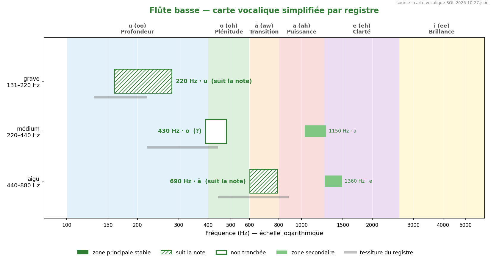
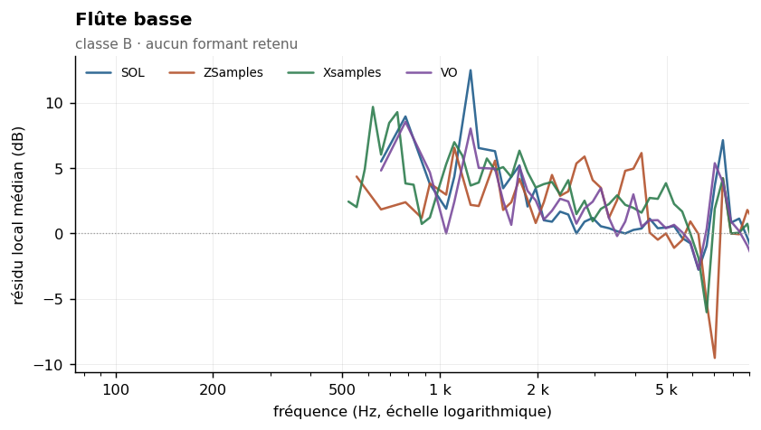
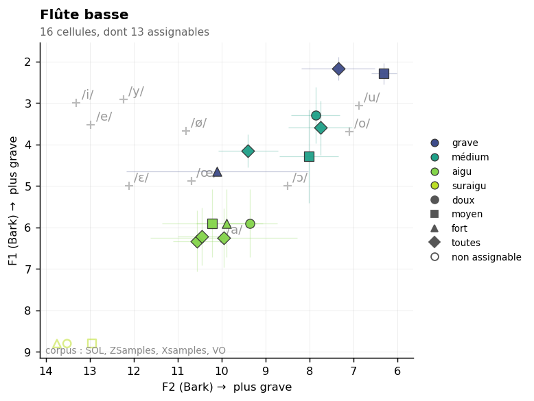

Bass flute
Sommaire › Les bois
| Classe | Provenance | Échantillons | Tessiture | Formants établis |
|---|---|---|---|---|
| B | VSL | 39 | C3–C6 | 0 |



Statut des formants — révision du 26/10/2026
Confrontation des cinq corpus. Provenance de ce corpus : VSL / ConTimbre / perso (Yan_Adds).
Aucun formant retenu. Si le résultat négatif est répliqué, c'est un acquis — voir
_CORPUS-CROISES.md.
Méthode 8 appliquée — aucun formant retenu. Voir
00-METHODE.md.
Deux causes se cumulent, et il importe de ne pas les confondre.
Cause structurelle. La flûte basse est de classe B, ρ = 0,84 : son spectre suit la hauteur. L'écart-type de l'enveloppe vraie, σ = 776 Hz, est le deuxième plus élevé du corpus des bois après le piccolo. Comme pour toute la famille, l'invariant pertinent est la coupure, non une résonance de corps.
Cause contingente. Le corpus ne compte que 39 échantillons. C'est trop peu pour peupler les groupes de rang harmonique du test d'indépendance : le seul candidat détecté n'atteint 4 notes distinctes dans aucun groupe, contre 5 requises. La conclusion « aucun formant » est donc ici moins solide que pour le piccolo, où elle reposait sur 111 échantillons et sur un argument de principe. Un corpus élargi pourrait changer ce résultat.
| Zone | Résidu | k = 4–7 | k = 8–15 | k ≥ 16 | Robustesse | Verdict |
|---|---|---|---|---|---|---|
| 2 635 Hz | +1,0 dB | +0,1 | 0,0 | +0,9 | non | rejeté |
Les résidus sont quasi nuls sur tous les groupes de rang : ce n'est pas un problème de couverture mais une absence de signal. Le rejet est franc.
| Descripteur | Valeur | Lecture |
|---|---|---|
| Pente spectrale médiane | −12,5 dB/octave (σ 4,7) | près de deux fois plus plate que le piccolo |
| Harmoniques par note | 29 [10–83] | spectre riche |
| Balance impair − pair | −4,0 dB | tuyau ouvert |
| Enveloppe vraie | 420 Hz, σ 776 | σ considérable : pas de formant fixe |
La pente est le résultat le plus parlant. À −12,5 dB/octave contre −21,2 pour le piccolo et −18,3 pour la grande flûte, elle quantifie précisément ce que l'on décrit comme un « son chaud et soufflé, plus riche en harmoniques » : la flûte basse conserve beaucoup plus d'énergie dans l'aigu relatif. La dispersion σ = 4,7 traduit en outre une forte variation selon la dynamique et le souffle.
C'est un bon exemple de ce que l'abandon du formant fait gagner : la pente décrit l'instrument mieux que ne le faisait un F1 de 301 Hz, qui était la zone de la fondamentale.
| Source | Valeur annoncée | Notre mesure | Lecture |
|---|---|---|---|
| Yan_Adds (ancien) | F1 = 301 ± 92 Hz, /u/ | — | zone de la fondamentale, pas un formant |
| Ancien Fp | 1 338 Hz | — | artefact de fenêtre |
| Backus, Giesler, Meyer | aucune donnée | — | instrument non étudié dans les sources classiques |
Aucune source académique classique ne traite la flûte basse. Il n'y a donc rien à confirmer
ni à contredire, et les valeurs antérieures ne reposaient que sur le pipeline specenv.
Non défini dans Data/registres.md. À établir.
18 paires calculées. Fusion moyenne : 15 %. Voir ../_MELANGES.md.
| Couleur nouvelle avec | Se fond avec | ||
|---|---|---|---|
| Trombone basse | 42 % | Clarinette en Sib | 61 % |
| Hautbois | 30 % | Clarinette basse en Sib | 61 % |
| Trombone ténor | 30 % | Cor en Fa | 53 % |
À compléter. Pistes ouvertes :
Aucun à ce stade. Figures prévues dans ../Versions-html-and-docx/media/ :
| Fichier prévu | Contenu |
|---|---|
flute_basse_composite.png |
enveloppe composite, avec la couverture par bande montrant l'insuffisance du corpus |
flutes_pentes.png |
comparaison des quatre pentes de la famille (piccolo → contrebasse) — figure de famille |
La seconde figure est à partager avec les trois autres flûtes : c'est la pente, et non le formant, qui différencie la famille.